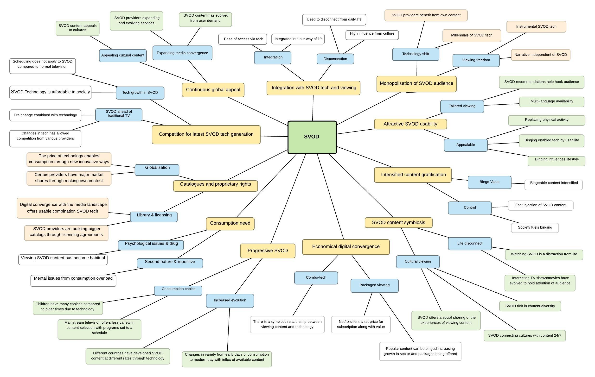

PhD
Extract From Ph.D. Communications – Universitat Pompeu Fabra

© James Glass 2025
Title of Study
Qualitative Analysis: Viewing, Consumption and Usability of SVOD.
Author: James Glass
University: Universitat Pompeu Fabra
Supervisor: Dr. Manel Jiménez Morales
Abstract
This research examines Subscription Video On-Demand (SVOD) using Netflix as one of the main examples that has seen a dramatic increase in usage in recent years compared to the traditional way of viewing content through television. Using focus group sessions and an online survey, a qualitative analysis approach is used by way of a thematic analysis to elaborate and gain insight into the phenomenon of SVOD within our society which has allowed viewers to alter time shifting and self-scheduling habits. Watching online film and television over the internet, forces the breakdown of the traditional value chain of viewing methods as well as consumption of it. This research aims to narrow this research gap surrounding SVOD. The results will be used to add value to the research area of this growing and changing phenomenon of online TV consumption with SVOD.
1. Introduction
SVOD has led the way for society to explore binge-watching programmes within the contemporary media landscape of SVOD online streaming. Increasingly people are choosing some online services such as Netflix for home viewing of watching movies and TV shows. Online video services are also very popular in society due to the advancement in technologies that are enabling audiences of all ages to access content.
SVOD providers such as Netflix, in conjunction with the internet, have allowed the consumption of content on tablets or smartphones. This thesis investigates SVOD providers to highlight how the landscape has changed, how content is viewed, and by what new technological device.
Building on these issues, we can further examine the points of change through the convergence of SVOD over the years, including:
- Changes and continuities of sales by SVOD providers and distributors.
- How these changes are affecting the type of content being produced.
- Cultural and economic effects of streaming digital content.
Additionally, market competition has grown as TV providers adopt new converged technologies, offering “triple play” packages with Video-On-Demand (Reardon 2006a, 2006b).
Introduction
SVOD has led the way for society to explore binge-watching programmes within the contemporary media landscape of SVOD online streaming. Increasingly people are choosing some online services such as Netflix for home viewing of watching movies and TV shows. Online video services are also very popular in within society due to the advancement in technologies that are enabling audiences of all ages to access content. SVOD providers such as Netflix along in conjunction with the internet has allowed the viewing consumption of content to be accessed via tablets or smartphones. This thesis investigation of SVOD provider will help highlight how the landscape has been changed and how content is viewed and by what new technological device. Building on such issues we can further examine the points of change through the convergence of SVOD over the years. These will include changes and continuities of sales by SVOD providers and distributors as they have adapted to the changing broadcasting landscape and global marketplace. Another area to consider is the how these changes are affecting the type of content being produced. Services like Netflix allow consumers to stream digital content that has an increased effect culturally and economically, further how there is an opportunity to innovate and respond to continual changes of media convergence and consumer requirements. Additionally, there has been growing market competition by TV providers due to the new convergence of technologies in that, they begun to offer “triple play” in partnership with Video-On-Demand (VOD) services, (Reardon 2006a, 2006b).
The convergence of television with internet technology has redefined our society along with the visual technology that has gone almost unchanged for many decades until recent years; television has become completely interactive, personalised and viewed on-demand. The idea for this study stems from: - There is a gap in this field of research of online TV. - The SVOD industry needs continuous analysis to measure its impact with society. - The evolution of this technology has been so fast that continuous research is required.
The change of consumer habits and self-scheduling behaviours have impacted the way of producing television. The digital era has had an impact on television. The new technical developments have created new ways of watching television as well as creating new associated behaviours with these developments that have allowed the derestriction and consumption of television programmes to be viewed not on a static programme schedule via a classic TV set but rather whenever and wherever. The various device options and way to access content is easily available and ever increasing and changing, the content becomes more and more available everywhere and at any time as suggested by Einav and Carey (2009). Significant improvements in Internet speed, online media player capacities, and consumer comfort with Internet usage enabled significant maturation in the online video space.
1.1 The birth of Netflix
As one of the best-known SVOD provider globally, Netflix was founded in California, USA, by a former high-school math teacher, Reed Hastings, and his former colleague, Marc Randolph, in 1997 (Auletta, 2014). The initial idea of renting and selling DVDs over the internet reportedly came to Hastings, when he received a $40 fine for returning an overdue videotape, the Apollo 13 (Funding Universe, n.d.). The initial strategy, which was based on a pair of emerging technologies (DVD and the Internet) and relied on the U.S. Postal Service, was a service, where the consumer could rent movies online and receive them with the post next day (Auletta, 2014).
Netflix began its life in 1997, an era where industry experts knew that the DVD format was potentially to become the new way of viewing content, and the company positioned itself to exploit this imminent format. To fully understand how Netflix changed television viewing, it is important to understand that Netflix was not a broadcast, satellite, cable, or premium cable channel. It did not use (and still does not) a pre-set programming schedule that forces viewers to watch a certain show at a particular time and day. Netflix would eventually play an integral role in the pioneering of streaming online television content, Netflix prudently avoided the development of online video within the market but it would rather dabble in online video, Netflix utilised its website to build up its DVD rental system designed to help users find content they would enjoy while collecting proprietary consumer-preference data that would later become an essential part of its future. Towards the end of the 1990's Netflix was a home video rental distributor with a robust and user-friendly website. Over the next decade, Netflix became much more and introduced new ways via its adaptable innovative developments for viewers to consume television content. Netflix began enabling subscribers to stream TV shows and movies at the beginning of 2007. Netflix filled market categories that previous video start-ups were incapable of doing.
Around the second half of the 2000´s, Internet technology rapidly developed, and devices could be connected to it that allowed television content to be viewed. Such Internet enabled devices such as the launch of the Xbox 360 in 2005, and the emergence of the iPhone in 2007 along with the Roku DVP set top box in 2008 and the iPad in 2010. Netflix, by the end of 2010 was available on all mentioned devices and gradually more. By 2012, Netflix became available on many different Internet devices which included smartphones, gaming consoles and along with tablets. Netflix, for example became a pioneer in the streaming of media and a leader in developing delivery capacities across a range of smart devices. Netflix along with the Internet has allowed the viewing consumption of content to be accessed via tablets or smartphones. The convergence of television with internet technology has redefined our society and a visual technology that has gone almost unchanged for many decades until recent years; television has become completely interactive, personalised and viewed on demand.
In the early days of before Netflix, watching television meant that the programming was predetermined by the provider and broadcasted on a pre-set schedule. Times have changed and these changes have been driven by consumer demands and the advent of the Internet. Newer trends began to emerge such as “Cutting-the-cord”, where consumers are cancelling their expensive traditional TV subscriptions and substituting them with cheaper substitutes or known as “Shaving-the-cord” whereby consumers are choosing cheaper TV packages as well as supplementing them with online video content. Turmoil ensued due to these newer trends in the “Over-The-Top” (OTT) market not to mention the widespread use of internet-enabled mobile devices. As the online video streaming market has gained a larger market share, it was commonly believed that traditional television was under threat is still dominates the market to date. Technological transformations have accelerated this shift or growth in the market in similar ways. For the first thirty years of the medium television watching was primarily controlled by networks, offering limited choice of programming on a tightly delimited schedule with no other options to access content, (Mittel, 2006, p. 31).
Netflix provided DVD and Blu-Ray rentals initially and later moved onto online streaming services. Customers can sign up for different subscription plans to provide thousands of movies and TV shows with unlimited access provided that they have internet-connected devices. Revenue is purely generated through subscription fees, since Netflix does not sell advertisement and therefore its content is ad-free. In 1999, a subscription system was launched that allowed customers to rent an unlimited number of DVDs, one at a time, for a low monthly subscription fee (Netflix). In 2000, the company had a very small subscriber-base and profits were very low, so Hastings then went to make a partnership with the video-rental giant, Blockbuster, and offered them to sell 49% of Netflix, but Blockbuster did not accept the deal (Auletta, 2014). However, Hastings did not give up. The company first became profitable in 2002 when it went public. The subscriber base and DVD titles were continuously growing throughout the years, when in 2007, management saw a new opportunity rising. Online streaming was added to the available services, which allowed subscribers to instantly watch video content on their web-enabled devices. According to Netflix (2016a) “viewers can watch as much as they want, anytime, anywhere, on nearly any Internet-connected screen. Members can play, pause and resume watching, all without commercials.” This illustrates that viewers of Netflix have the control about how much content they watch, when, where and in which way they want to use Netflix. This development indicates that with its changes the company aimed to improve its service for the customers and to adapt to technical innovations. When DVDs become popular as a medium for storing and distributing videos, the company followed (or better foresaw) this trend and integrated DVDs into its renting service. The same applies for its streaming feature that was introduced when broadband Internet became a standard for many people in the U.S. and Netflix realized a new opportunity for its service. Depending on the amount of watched content, streaming videos can be cheaper than buying a movie, especially as Netflix asks a monthly fee allowing unlimited streaming in return. Many viewers want to watch a movie and then move on without collecting it on DVD. Consuming video content is all about “watch it and forget it” (Dixon, 2013, p. 24).
Between 2007 and the end of 2009, the subscription base of Netflix increased with approximately 4,5 million members (Auletta, 2014). Having its ups and downs in the last few years, Netflix has become the leading streaming company around the world. It has entered the business of original programme production, has become the first internet TV-network winning the Primetime Emmy Award and has reached more than fifty million subscribers globally.
1.2 Television convergence
The popularity of television in the US began to gain popularity soon after the World War II. or early 1950s, when the sales of TV sets started to increase (Parsons, 2008) and from this programming started to expand from mainly broadcastings to original dramas. By the 1960´s Cable Television started to gain more interest, where most of the viewers received their television broadcasts through an antenna system called Community Antenna Television (CATV). During the 1980s and mid-1990s direct satellite television (DBS) soon took off and the number of cable networks significantly increased, viewing shows exploded and Videocassette recorders (VCRs) became widely available for the public (Stephens, 2000). By 1996, the saturation of the US television market reached 66.7 percent of American households and a with a growing revenue of approximately $25.7 billion (Parsons, 2008).
With growing competition and Digital Broadcast Services (DBS) services starting to take away subscribers, the latter half of the 1990s offered new technological developments. One of those developments, the most important, was digitalisation, when for example cable operating companies started to upgrade their distribution networks from analogue to digital (Parsons, 2008). This technological development opened up the way to provide high-speed internet access, high definition and advanced digital video services, such as Video-On-Demand (VOD) and Subscription Video-On-Demand (SVOD).
Television services, during the 1980's and 1990's, were completely different than what we have been used to recently. Until VCRs became widely available and Video-On-Demand (VOD) was made possible, television broadcasting was based on a pre-set schedule whereby shows, movies and TV-series were scheduled to specific time-slots. This changed with the Video Home Systems (VHSs) that had gained more popularity and dominance during the 1990s. Video rental stores started to show up and grow into huge chains like Blockbuster and recording of TV programmes straight from the television became possible. Although VHS was still number one at the end of the 20th century, the new millennium brought some more important technological advancement.
Early 2000, the DVDs began to penetrate the market of VHS (Feldt), digital video recorders (DVRs) began to offer more control to subscribers with their VOD functions and as the internet gained more popularity, content became easier of just a few clicks away through the Internet. High-speed internet and increasing use of mobile devices made it possible to first download programmes and then later on also to stream entertainment content (Parsons, 2008). The manner of consuming home entertainment has been greatly altered. Due to this growth and instant access to video streaming, along with access to different high-end mobile devices and internet connectivity everywhere, consumers of SVOD now enjoy whatever they want to watch, wherever and whenever they wish. A convergence of technological, economic, and legal developments has led to the complete transformation of how consumers access and view programming. New companies and new distribution models have begun to emerge to fill the increasing consumer demand, pushing the entire entertainment industry into a new realm of content-viewing experiences (Possessky, 2013).
Henry Jenkins’ Convergence Culture identifies the various elements that contribute to technological convergence and provides the critical insight that changes in cultural interaction with media depend as much on changes in consumer behaviour as on technological innovation. Convergence, as we can see, is both a top-down corporate- driven process and a bottom-up consumer-driven process. Corporate convergence coexists with grassroots convergence. Media companies are learning how to accelerate the flow of media content across delivery channels to expand revenue opportunities, broaden markets, and reinforce viewer commitments. Consumers are learning how to use these different media technologies to bring the flow of media more fully under their control and to interact with other consumers (Jenkins, 2006, p.18).
Due to digital convergence and global usage of the internet with improved elements such as speed and reliability, consumers today have much more control over their content then before. Today OTT services provide access for consumers to most of the same digital content what traditional TV provides (Naseem et al., 2014). The OTT industry shares similar aspects with the Pay TV industry, although these two industries have different business models, “delivery systems”, content and costs, just to mention a few (Narang, 2013).
One of the main differences is that while Pay TV companies use their own networks or infrastructure to deliver their services, most OTT providers have no ownership over the network or infrastructure (Sheehy, 2013). Content is delivered through the Internet using a network managed by another company. Therefore, all of the operating costs of OTT service providers are mostly related to providing their core service, whereas Pay TV providers have significant costs related to their infrastructure as well. Revenue in the television industry as a whole is generated by multiple methods, but the primary revenue sources that are mainly related both to the Pay TV and OTT industry are subscription fees, license agreements and advertising fees. As the players are often dependent on each other, the competition is somewhat complex. The initial idea of renting and selling DVDs over the internet reportedly come to Hastings, when he received a $40 fine for returning an overdue videotape, the Apollo 13 (Founding Universe). The initial strategy, which was based on a pair of emerging technologies (DVD and the internet) and relied on the U.S.Postal Service, was a service, where the consumer could rent movies online and receive them with the post next day (Auletta, 2014).
At the beginning of linear television, the audience would either watch a show or totally miss it as neither recordings nor catch-up watching were possible. Hence, everyone would watch a show at the same time adhering to the fixed time slots. This viewing behaviour has been altered through the introduction of recording machines, DVDs and, finally, online streaming services, which gave the audience more control. In contrast to a linear TV programme, as for instance Netflix is not bound to a limited number of hours per week. It can therefore offer an infinite number of videos and provide its subscribers with more choice and control as they can choose what, where and when to watch. As a result, channels become less important. Moreover, Netflix has connected its service to several devices as, for instance, tablets, smartphones and so on, to increase the availability of its content and the opportunities to consume it. According to McRae (20016) it can be said that Netflix realised the users’ need to control entertainment and reacts to it by allowing them the control about how to use the offered video content. Apart from that, as an online service, Netflix offers its content in a digital way via the new digital landscape, i.e. the subscribers. Moreover, SVOD providers now feature a list of licensed content by major studios allowing them to remain in control of the life cycle of programmes and films, however, this model has been changing over recent years due to SVOD providers such as Netflix producing its own content therefore changing the landscape hence as it will be highlighted in this thesis, a new conglomerate with a vested interest in the proliferation of content within the SVOD marketplace. Conversely, as this digital convergence transforms into content being streamed online which has become the term known for this emergent technological process within the SVOD industry. It leads to a greater debate about the old and new models of consumer activity with television. Many of the narrative forms or stories, which have come to be used in contemporary television series have been made possible by technological innovations - through the digital convergence of technologies. Technological transformations away from the television screen have alsoimpacted the television narrative.
Using the new technologies such as the internet along with SVOD providers, and online participation, viewers have taken an active role in consuming narratively complex television serials and helping it develop within the global media industries. The internet’s presence everywhere has enabled fans to embrace a collective for the dissemination of information, interpretations, and discussions of complex narratives that invite participatory engagement via social media outlets. The television show, 24 (2001-2010) with its unique uses of time and its use of split screens, which is, for example, one of the hallmark features of the series 24. Its use of split screens as showing partners of a telephone conversation at the same time, this series also uses the technique of split screens to foreground different aspects of a scene, either by two long shots from different positions or by one long shot and one or more close-ups of the same scene.
In this way, multi-perspective narration in audio-visual media confronts viewers with more than one version of events at the same time. Now SVOD has affected a change inviewing behaviours that were once controlled according to traditional television schedules.
Research Questions
This research will be centred around the following questions:
- R1 - SVOD television has changed the way of how viewers interact with online films/serials across multiple platforms.
- R2 - SVOD online television has increased the way viewing is consumed and is ot dependent on scheduling or how it is consumed compared to pre-internet consumption.
According to Mittell (2006) while reruns proliferated in syndication, typically, programmes were shown out of order, encouraging episodic narratives to accommodate an almost random presentation of a series. Since the mainstreaming of cable and the VCR in the early 1980s, the balance has shifted more toward viewer control along with the proliferation of channels has helped routinize repeats, so that viewers can catch up on a programme in chronologically aired reruns or view missed premium cable shows multiple times throughout the week. Time-shifting technologies like VCRs and digital video recorders enable viewers to choose when they want to watch a programme, but more importantly for narrative construction, viewers can re-watch episodes or segments to parse out complex moments. While select series have been sold on videotape for years, the compact packaging and visual quality of DVDs have led to a boom in a new mode of television viewing, with fans binging on a show a season at a time (like the frequently reported attempts to watch a season of 24 to match its diegetic time frame), and encouraging multiple viewings of what used to be a mostly ephemeral form of entertainment. Technological transformations away from the television screen have also impacted television narrative.
© James Glass 2025